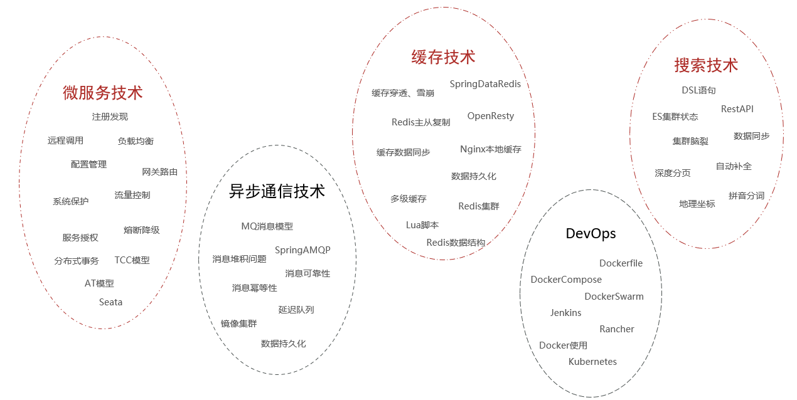
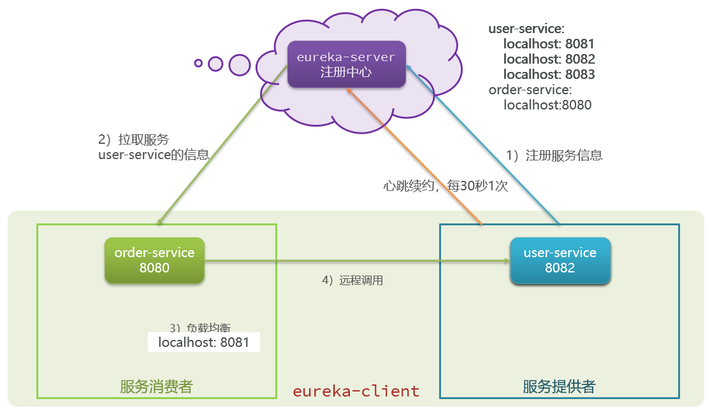
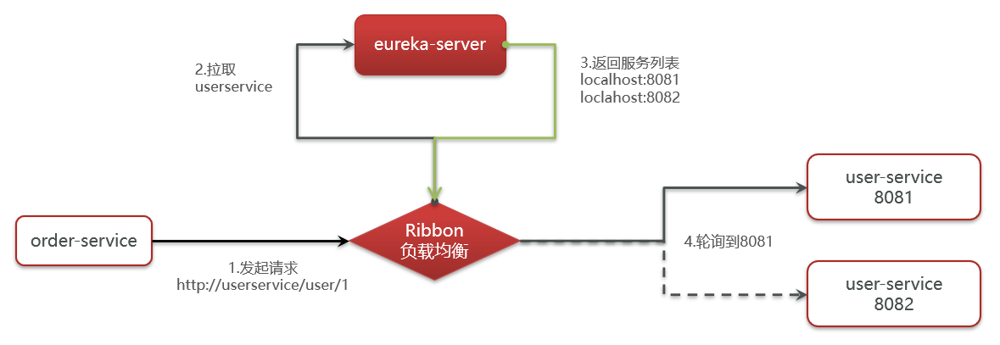
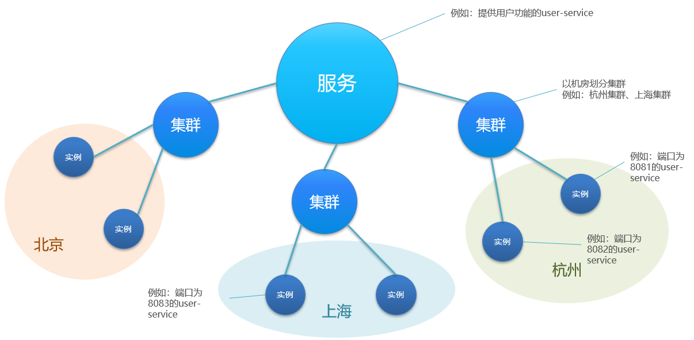
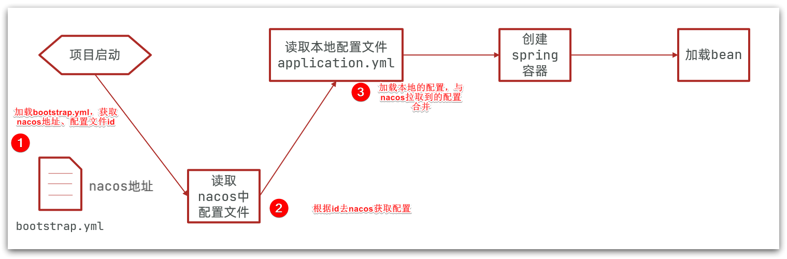

微服务
[TOC]
甚么是微服务
微服务是一种经过良好架构设计的分布式架构方案。


微服务的架构特征：
- 单一职责：微服务拆分粒度更小，每一个服务都对应唯一的业务能力，做到单一职责
- 自治：团队独立、技术独立、数据独立，独立部署和交付
- 面向服务：服务提供统一标准的接口，与语言和技术无关
- 隔离性强：服务调用做好隔离、容错、降级，避免出现级联问题
服务拆分
微服务拆分的几个原则：
- 业务解耦：不同微服务，不要重复开发相同业务
- 数据库解耦：微服务数据独立，不要访问其它微服务的数据库
- 微服务可以将自己的业务暴露为接口，供其它微服务调用
微服务远程调用
使用 RestTemplate 向其他服务发起 HTTP 请求。
远程调用的问题：
- 服务消费者该如何获取服务提供者的地址信息？
- 如果有多个服务提供者，消费者该如何选择？
- 消费者如何得知服务提供者的健康状态？
Eureka 注册中心
1.搭建EurekaServer
-
引入eureka-server依赖
-
添加 @EnableEurekaServer 注解
-
在 application.yml 中配置 eureka 地址
2.服务注册
-
引入 eureka-client 依赖
-
在 application.yml 中配置 eureka 地址
3.服务发现
-
给RestTemplate添加@LoadBalanced注解
-
用服务提供者的服务名称远程调用
作用
Eureka 的作用：
搭建 Eureka Server
Eureka Server 不是一个独立的软件，依赖于一个独立的微服务，以服务的形式呈现。
- 引入 eureka-server 依赖
- 添加 @EnableEurekaServer 注解
- 在 application.yml 中配置 eureka 地址
引入 SpringCloud 为 eureka 提供的 starter 依赖：
<dependency>
<groupId>org.springframework.cloud</groupId>
<artifactId>spring-cloud-starter-netflix-eureka-server</artifactId>
</dependency>
给 eureka-server 服务编写一个启动类，一定要添加一个 @EnableEurekaServer 注解，开启 eureka 的注册中心功能：
package cn.itcast.eureka;
import org.springframework.boot.SpringApplication;
import org.springframework.boot.autoconfigure.SpringBootApplication;
import org.springframework.cloud.netflix.eureka.server.EnableEurekaServer;
@SpringBootApplication
@EnableEurekaServer
public class EurekaApplication {
public static void main(String[] args) {
SpringApplication.run(EurekaApplication.class, args);
}
}
编写一个 application.yml 文件，内容如下：
server:
port: 10086
spring:
application:
name: eureka-server
eureka:
client:
service-url:
defaultZone: http://127.0.0.1:10086/eureka # 将自己也注册到 Eureka Server
注册到 Eureka
下面，我们将 user-service 注册到 eureka-server 中去。
在 user-service 的 pom 文件中，引入下面的 eureka-client 依赖：
<dependency>
<groupId>org.springframework.cloud</groupId>
<artifactId>spring-cloud-starter-netflix-eureka-client</artifactId>
</dependency>
在 user-service 中，修改 application.yml 文件，添加服务名称、eureka 地址：
spring:
application:
name: userservice
eureka:
client:
service-url:
defaultZone: http://127.0.0.1:10086/eureka
服务拉取
服务拉取是基于服务名称获取服务列表，然后在对服务列表做负载均衡。
-
修改 OrderService 的代码，修改访问的 url 路径，用服务名代替ip、端口
String url = "http://userservice/user/" + order.getUserId(); -
在 order-service 项目的启动类 OrderApplication 中的 RestTemplate 添加负载均衡注解
@Bean @LoadBalanced public RestTemplate restTemplate() { return new RestTemplate(); }
Ribbon 负载均衡
Ribbon 负载均衡是 SpringCloud 的一个组件，spring-cloud-starter-netflix-eureka-client 会自动引入 ribbon。
负载均衡的流程：
通过定义IRule实现可以修改负载均衡规则，有两种方式：
-
代码方式：在 order-service 中的 OrderApplication 类中，定义一个新的 IRule：
@Bean public IRule randomRule(){ return new RandomRule(); } -
配置文件方式：在 order-service 的 application.yml 文件中，添加新的配置也可以修改规则：
userservice: # 给某个微服务配置负载均衡规则，这里是userservice服务 ribbon: NFLoadBalancerRuleClassName: com.netflix.loadbalancer.RandomRule # 负载均衡规则
Ribbon 默认是采用懒加载，即第一次访问时才会去创建 LoadBalanceClient，请求时间会很长。
而饥饿加载则会在项目启动时创建，降低第一次访问的耗时，通过下面配置开启饥饿加载：
ribbon:
eager-load:
enabled: true # 开启饥饿加载
clients:
- userservice # 指定对userservice这个服务饥饿加载
Nacos 注册中心
nacos 有别于 eureka，nacos 有一个客户端（其实也是一个 jar 包）。Nacos 也使用 ribbon 做服务拉取和负载均衡。
Nacos 比 Eureka 多了一个配置管理，可以远程管理各个微服务的 yml 文件。
nacos 已经升级到 nacos2 版本，性能提了 3 倍，加入了 gRPC 协议（nacos1.x 采用 restful 的方式）。
Nacos API 注册
用于其他服务主动向 nacos 发送心跳。
https://nacos.io/zh-cn/docs/open-api.html
服务注册
在 cloud-demo 父工程的pom文件中的<dependencyManagement>中引入 SpringCloudAlibaba 的依赖：
<dependency>
<groupId>com.alibaba.cloud</groupId>
<artifactId>spring-cloud-alibaba-dependencies</artifactId>
<version>2.2.6.RELEASE</version>
<type>pom</type>
<scope>import</scope>
</dependency>
然后在user-service和order-service中的pom文件中引入 nacos-discovery 依赖：
<dependency>
<groupId>com.alibaba.cloud</groupId>
<artifactId>spring-cloud-starter-alibaba-nacos-discovery</artifactId>
</dependency>
在 user-service 和 order-service 的 application.yml 中添加 nacos 地址：
spring:
cloud:
nacos:
server-addr: localhost:8848
服务分级存储模型
将一个服务的多个实例，部署到多个机房。Nacos 引入了这个机房（地域）的概念。
服务调用尽可能选择本地集群的服务，跨集群调用延迟较高。本地集群不可访问时，再去访问其它集群。
配置集群(cluster)，修改 user-service 的 application.yml 文件，添加集群配置：
spring:
cloud:
nacos:
server-addr: localhost:8848
discovery:
cluster-name: HZ # 集群名称
还需要配置以下 Ribbon 的负载均衡规则。修改 order-service 的application.yml文件，修改负载均衡规则：
orderservice:
ribbon:
NFLoadBalancerRuleClassName: com.alibaba.cloud.nacos.ribbon.NacosRule # 负载均衡规则
NacosRule 负载均衡策略：
-
优先选择同集群服务实例列表
-
本地集群找不到提供者，才去其它集群寻找，并且会报警告
-
确定了可用实例列表后，再采用随机负载均衡挑选实例
注意：Ribbon 默认的负载均衡 Rule 是轮询，而 NacosRule 是随机的负载均衡方式。
权重配置
实际部署中会出现这样的场景：
服务器设备性能有差异，部分实例所在机器性能较好，另一些较差，我们希望性能好的机器承担更多的用户请求。但默认情况 NacosRule是同集群内随机挑选，不会考虑机器的性能问题。因此，Nacos提供了权重配置来控制访问频率，权重越大则访问频率越高。在nacos控制台，找到user-service的实例列表，点击编辑，即可修改权重。
Nacos 控制台可以设置实例的权重值，0~1之间。同集群内的多个实例，权重越高被访问的频率越高，权重设置为0则完全不会被访问。
注意：如果权重修改为0，则该实例永远不会被访问。
权重配置，可以用于服务的平滑(用户无感知)升级，先把一个服务的权重设置为 0，然后设置升级服务，再把权重设置为 0.1，进行小流量测试。
环境隔离 namespace
Nacos 提供了 namespace 来实现环境隔离功能。
- nacos 中可以有多个 namespace
- namespace 下可以有 group、service等
- 不同 namespace 之间相互隔离，例如不同 namespace 的服务互相不可见

默认情况下，所有service、data、group 都在同一个 namespace，名为 public。我们可以增加 dev, pro, test 等命名空间。
给微服务配置 namespace：
例如，修改 order-service 的 application.yml 文件：
spring:
cloud:
nacos:
server-addr: localhost:8848
discovery:
cluster-name: HZ
namespace: 492a7d5d-237b-46a1-a99a-fa8e98e4b0f9 # 命名空间，填ID
nacos 与 eureka 区别
Nacos 和 Eureka 整体结构类似，服务注册、服务拉取、心跳等待，但是也存在一些差异：

-
Nacos 与 eureka 的共同点
- 都支持服务注册和服务拉取
- 都支持服务提供者心跳方式做健康检测
-
Nacos 与 Eureka 的区别
- Nacos 支持服务端主动检测提供者状态：临时实例采用心跳模式（默认情况下所有的实例都是临时实例），非临时实例采用主动检测模式
- 临时实例心跳不正常会被剔除，非临时实例则不会被剔除
- Nacos 支持服务列表变更的消息推送模式，服务列表更新更及时
- Nacos 集群默认采用 AP 方式，当集群中存在非临时实例时，采用 CP 模式；Eureka 采用 AP 方式
配置一个服务实例为永久实例：
spring:
cloud:
nacos:
discovery:
ephemeral: false # 设置为非临时实例
Nacos 配置管理
统一配置管理
-
引入 nacos-config 依赖
首先，在user-service服务中，引入nacos-config的客户端依赖：
<!--nacos配置管理依赖--> <dependency> <groupId>com.alibaba.cloud</groupId> <artifactId>spring-cloud-starter-alibaba-nacos-config</artifactId> </dependency> -
添加 bootstrap.yaml
然后，在user-service中添加一个bootstrap.yaml 文件，内容如下：
spring: application: name: userservice # 服务名称 profiles: active: dev #开发环境，这里是dev cloud: nacos: server-addr: localhost:8848 # Nacos地址 config: file-extension: yaml # 文件后缀名这里会根据spring.cloud.nacos.server-addr获取nacos地址，再根据
${spring.application.name}-${spring.profiles.active}.${spring.cloud.nacos.config.file-extension}作为文件id，来读取配置。本例中，就是去读取
userservice-dev.yaml：
-
读取nacos配置
在user-service中的UserController中添加业务逻辑，读取pattern.dateformat配置：

配置热更新
Spring 不会自动进行热更新，有两种方式可以配置热更新：
-
@RefreshScope在 @Value 注入的变量所在类上添加注解

-
@ConfigurationProperties使用 @ConfigurationProperties 注解代替 @Value 注解。
在 user-service 服务中，添加一个类，读取 patterrn.dateformat 属性：
package cn.itcast.user.config; import lombok.Data; import org.springframework.boot.context.properties.ConfigurationProperties; import org.springframework.stereotype.Component; @Component @Data @ConfigurationProperties(prefix = "pattern") public class PatternProperties { private String dateformat; }在 UserController 中使用这个类代替 @Value：

配置共享
其实微服务启动时，会去nacos读取多个配置文件，例如：
-
[spring.application.name]-[spring.profiles.active].yaml，例如：userservice-dev.yaml -
[spring.application.name].yaml，例如：userservice.yaml
而[spring.application.name].yaml不包含环境，因此可以被多个环境共享。
当 nacos、服务本地同时出现相同属性时，优先级有高低之分：

HTTP 客户端 Feign
Feign 替代 RestTemplate
RestTemplate 的缺点：
-
代码可读性差，编程体验不统一
-
参数复杂URL难以维护
Feign 是一个声明式的 http 客户端，官方地址：https://github.com/OpenFeign/feign
其作用就是帮助我们优雅的实现http请求的发送，解决上面提到的问题。Feign 还继承了 Ribbon，自带负载均衡。
Fegin的使用步骤如下：
-
引入依赖
我们在order-service服务的pom文件中引入feign的依赖：
<dependency> <groupId>org.springframework.cloud</groupId> <artifactId>spring-cloud-starter-openfeign</artifactId> </dependency> -
添加注解
在 order-service 的启动类添加注解开启Feign的功能：

-
编写Feign的客户端
在 order-service（消费者，访问生产者 userservice） 的 client 文件夹下，新建一个接口，内容如下：
package cn.itcast.order.client; import cn.itcast.order.pojo.User; import org.springframework.cloud.openfeign.FeignClient; import org.springframework.web.bind.annotation.GetMapping; import org.springframework.web.bind.annotation.PathVariable; @FeignClient("userservice") public interface UserClient { @GetMapping("/user/{id}") User findById(@PathVariable("id") Long id); }这个客户端主要是基于 SpringMVC 的注解来声明远程调用的信息，比如：
- 服务名称：userservice
- 请求方式：GET
- 请求路径：/user/{id}
- 请求参数：Long id
- 返回值类型：User
这样，Feign 就可以帮助我们发送 http 请求，无需自己使用 RestTemplate 来发送了。
自定义配置
Feign运行自定义配置来覆盖默认配置，可以修改的配置如下：
| 类型 | 作用 | 说明 |
|---|---|---|
| feign.Logger.Level | 修改日志级别 | 包含四种不同的级别：NONE、BASIC、HEADERS、FULL |
| feign.codec.Decoder | 响应结果的解析器 | http远程调用的结果做解析，例如解析json字符串为java对象 |
| feign.codec.Encoder | 请求参数编码 | 将请求参数编码，便于通过http请求发送 |
| feign. Contract | 支持的注解格式 | 默认是SpringMVC的注解 |
| feign. Retryer | 失败重试机制 | 请求失败的重试机制，默认是没有，不过会使用Ribbon的重试 |
一般我们需要配置的就是日志级别。
Feign性能优化
Feign的优化：
-
日志级别尽量用 basic
-
使用 HttpClient 或 OKHttp 代替 URLConnection
2.1 引入 feign-httpClient 依赖
2.2 配置文件开启 httpClient 功能，设置连接池参数
Feign 实战
将 Feign 的 Client 抽取为独立模块，并且把接口有关的 POJO、默认的 Feign 配置都放到这个模块中，提供给所有消费者使用。
也就是将所有消费者端写的 feign client，抽取到一个模块中，防止每个消费者模块都写一遍，增加维护成本。
例如，将 UserClient、User、Feign 的默认配置都抽取到一个 feign-api 包中，所有微服务引用该依赖包，即可直接使用。

统一网关 Gateway
网关的作用

- 身份认证和权限校验
- 服务路由、负载均衡
- 请求限流
gateway 快速入门
gateway 网关以一个独立的服务而存在。
网关搭建步骤：
-
创建项目，引入nacos服务发现和gateway依赖
-
配置application.yml，包括服务基本信息、nacos地址、路由
路由配置包括：
-
路由id：路由的唯一标示
-
路由目标（uri）：路由的目标地址，http代表固定地址，lb代表根据服务名负载均衡
-
路由断言（predicates）：判断路由的规则，
-
路由过滤器（filters）：对请求或响应做处理

步骤：
-
创建 gateway 服务，引入依赖

引入依赖：
<!--网关--> <dependency> <groupId>org.springframework.cloud</groupId> <artifactId>spring-cloud-starter-gateway</artifactId> </dependency> <!--nacos服务发现依赖--> <dependency> <groupId>com.alibaba.cloud</groupId> <artifactId>spring-cloud-starter-alibaba-nacos-discovery</artifactId> </dependency> -
编写启动类
package cn.itcast.gateway; import org.springframework.boot.SpringApplication; import org.springframework.boot.autoconfigure.SpringBootApplication; @SpringBootApplication public class GatewayApplication { public static void main(String[] args) { SpringApplication.run(GatewayApplication.class, args); } } -
编写基础配置和路由规则
创建application.yml文件，内容如下：
server: port: 10010 # 网关端口 spring: application: name: gateway # 服务名称 cloud: nacos: server-addr: localhost:8848 # nacos地址 gateway: routes: # 网关路由配置 - id: user-service # 路由id，自定义，只要唯一即可 # uri: http://127.0.0.1:8081 # 路由的目标地址 http就是固定地址 uri: lb://userservice # 路由的目标地址 lb就是负载均衡，后面跟服务名称 predicates: # 路由断言，也就是判断请求是否符合路由规则的条件 - Path=/user/** # 这个是按照路径匹配，只要以/user/开头就符合要求我们将符合
Path规则的一切请求，都代理到uri参数指定的地址。本例中，我们将
/user/**开头的请求，代理到lb://userservice，lb是负载均衡，根据服务名拉取服务列表，实现负载均衡。
断言工厂
predicates：
| 名称 | 说明 | 示例 |
|---|---|---|
| After | 是某个时间点后的请求 | - After=2037-01-20T17:42:47.789-07:00[America/Denver] |
| Before | 是某个时间点之前的请求 | - Before=2031-04-13T15:14:47.433+08:00[Asia/Shanghai] |
| Between | 是某两个时间点之前的请求 | - Between=2037-01-20T17:42:47.789-07:00[America/Denver], 2037-01-21T17:42:47.789-07:00[America/Denver] |
| Cookie | 请求必须包含某些cookie | - Cookie=chocolate, ch.p |
| Header | 请求必须包含某些header | - Header=X-Request-Id, \d+ |
| Host | 请求必须是访问某个host（域名） | - Host=.somehost.org,.anotherhost.org |
| Method | 请求方式必须是指定方式 | - Method=GET,POST |
| Path | 请求路径必须符合指定规则 | - Path=/red/{segment},/blue/** |
| Query | 请求参数必须包含指定参数 | - Query=name, Jack或者- Query=name |
| RemoteAddr | 请求者的ip必须是指定范围 | - RemoteAddr=192.168.1.1/24 |
| Weight | 权重处理 |
过滤器工厂
GatewayFilter 是网关中提供的一种过滤器，可以对进入网关的请求和微服务返回的响应做处理。

Spring提供了31种不同的路由过滤器工厂。例如：
| 名称 | 说明 |
|---|---|
| AddRequestHeader | 给当前请求添加一个请求头 |
| RemoveRequestHeader | 移除请求中的一个请求头 |
| AddResponseHeader | 给响应结果中添加一个响应头 |
| RemoveResponseHeader | 从响应结果中移除有一个响应头 |
| RequestRateLimiter | 限制请求的流量 |
| ... |
-
请求头过滤器
需求：给所有进入userservice的请求添加一个请求头：Truth=itcast is freaking awesome!
只需要修改gateway服务的application.yml文件，添加路由过滤即可：
spring: cloud: gateway: routes: - id: user-service uri: lb://userservice predicates: - Path=/user/** filters: # 过滤器 - AddRequestHeader=Truth, Itcast is freaking awesome! # 添加请求头当前过滤器写在userservice路由下，因此仅仅对访问 userservice 的请求有效。
-
默认过滤器
如果要对所有的路由都生效，则可以将过滤器工厂写到 default 下。格式如下：
spring: cloud: gateway: routes: - id: user-service uri: lb://userservice predicates: - Path=/user/** default-filters: # 默认过滤项 - AddRequestHeader=Truth, Itcast is freaking awesome!总结
过滤器的作用是什么？
① 对路由的请求或响应做加工处理，比如添加请求头
② 配置在路由下的过滤器只对当前路由的请求生效
defaultFilters 的作用是什么？
① 对所有路由都生效的过滤器
全局过滤器
全局过滤器的作用也是处理一切进入网关的请求和微服务响应，与GatewayFilter的作用一样。区别在于GatewayFilter通过配置定义，处理逻辑是固定的；而 GlobalFilter 的逻辑需要自己写代码实现。
定义方式是实现 GlobalFilter 接口。
public interface GlobalFilter {
/**
* 处理当前请求，有必要的话通过{@link GatewayFilterChain}将请求交给下一个过滤器处理
*
* @param exchange 请求上下文，里面可以获取Request、Response等信息
* @param chain 用来把请求委托给下一个过滤器
* @return {@code Mono<Void>} 返回标示当前过滤器业务结束
*/
Mono<Void> filter(ServerWebExchange exchange, GatewayFilterChain chain);
}
在 filter 中编写自定义逻辑，可以实现下列功能：
- 登录状态判断
- 权限校验
- 请求限流等
自定义全局过滤器，需求：定义全局过滤器，拦截请求，判断请求的参数是否满足下面条件：
-
参数中是否有authorization，
-
authorization参数值是否为admin
如果同时满足则放行，否则拦截。
实现：
在gateway中定义一个过滤器：
package cn.itcast.gateway.filters;
import org.springframework.cloud.gateway.filter.GatewayFilterChain;
import org.springframework.cloud.gateway.filter.GlobalFilter;
import org.springframework.core.annotation.Order;
import org.springframework.http.HttpStatus;
import org.springframework.stereotype.Component;
import org.springframework.web.server.ServerWebExchange;
import reactor.core.publisher.Mono;
@Order(-1) // 过滤器的执行顺序
@Component
public class AuthorizeFilter implements GlobalFilter {
@Override
public Mono<Void> filter(ServerWebExchange exchange, GatewayFilterChain chain) {
// 1.获取请求参数
MultiValueMap<String, String> params = exchange.getRequest().getQueryParams();
// 2.获取authorization参数
String auth = params.getFirst("authorization");
// 3.校验
if ("admin".equals(auth)) {
// 放行
return chain.filter(exchange);
}
// 4.拦截
// 4.1.禁止访问，设置状态码
exchange.getResponse().setStatusCode(HttpStatus.FORBIDDEN);
// 4.2.结束处理
return exchange.getResponse().setComplete();
}
}
自定义过滤器，一定要有顺序。
过滤器执行顺序
请求进入网关会碰到三类过滤器：当前路由的过滤器、DefaultFilter、GlobalFilter
请求路由后，会将当前路由过滤器和 DefaultFilter、GlobalFilter，合并到一个过滤器链（集合）中，排序后依次执行每个过滤器：

排序的规则是什么呢？
- 每一个过滤器都必须指定一个int类型的 order 值，order值越小，优先级越高，执行顺序越靠前。
- GlobalFilter 通过实现 Ordered 接口，或者添加 @Order 注解来指定 order 值，由我们自己指定
- 路由过滤器和 defaultFilter 的 order 由 Spring 指定，默认是按照声明顺序从1递增。
- 当过滤器的 order 值一样时，会按照 defaultFilter > 路由过滤器 > GlobalFilter的顺序执行。
网关跨域问题
跨域只需要在网关处处理就 ok 了。
在 gateway 服务的 application.yml 文件中，添加下面的配置：
spring:
cloud:
gateway:
# 。。。
globalcors: # 全局的跨域处理
add-to-simple-url-handler-mapping: true # 解决options请求被拦截问题
corsConfigurations:
'[/**]':
allowedOrigins: # 允许哪些网站的跨域请求
- "http://localhost:8090"
allowedMethods: # 允许的跨域ajax的请求方式
- "GET"
- "POST"
- "DELETE"
- "PUT"
- "OPTIONS"
allowedHeaders: "*" # 允许在请求中携带的头信息
allowCredentials: true # 是否允许携带cookie
maxAge: 360000 # 这次跨域检测的有效期